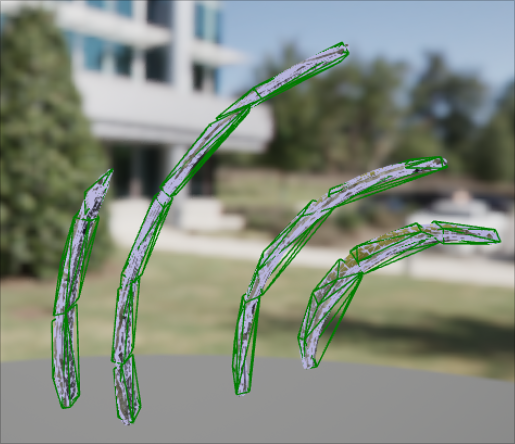
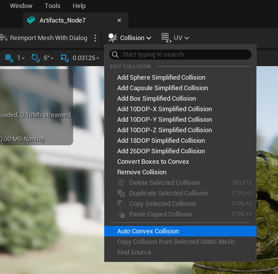
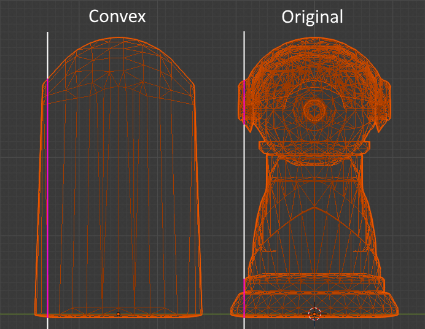
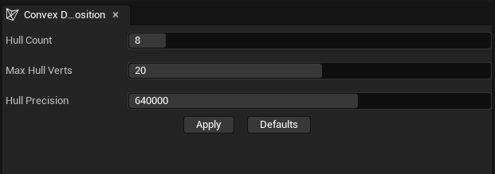
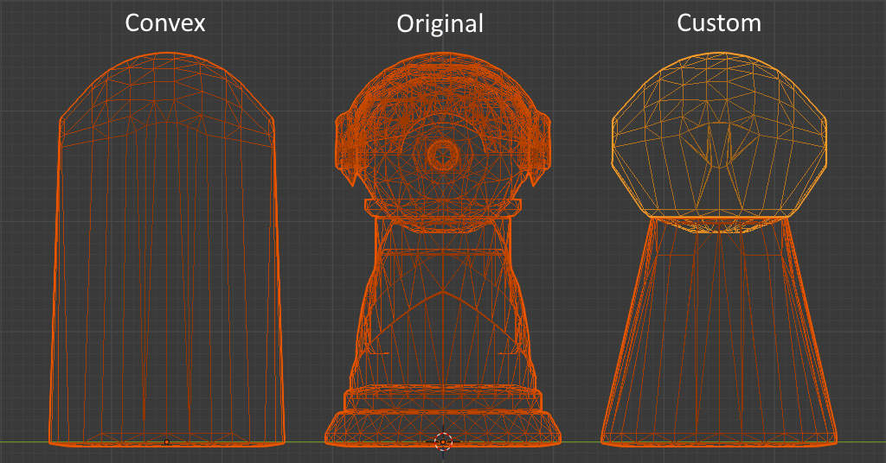

Collisions in Unreal Engine
How to set up collision meshes for static objects
Learn the basics of adding collisions to static mesh objects in Unreal Engine, including primitives, auto convex hulls and custom imported geometry.
Mesh Types
To start editing the collisions of a static mesh component press 'ctrl+E'. This will open the editing window, which for static mesh actors is mainly useful for editing collision and rendering options like materials and LOD. Changes here apply to all copies of the object.
From this window we can edit how the collisions work on our object. There are two main options for meshes: complex, which uses the render mesh of the object, and simple, which uses custom geometry for the collisions. Complex is not recommended in most cases since it uses a lot more performance than simple, but it is a good option for prototypes.
Objects can use both types of collision, and there are settings for which type is used for different interactions. Make sure collision complexity is set to the type you're using if your collisions aren't working.
Simple collisions are made using three different options: primitive shapes (cubes, spheres and capsules), auto convex meshes, or imported simplified meshes. Primitive and Auto Convex colliders can be added from the 'Collision' dropdown at the top of the window. You can edit the position, rotation and scale of each primitive individually (no matter which type) using tools in the viewing window, as well as duplicate and delete them. Tip: Any simple colliders that are added to the object will appear in a list in the 'primitives' section.
List of options:
- Complex
- Simple
- Primitive
- Auto Convex
- Imported
Convex vs Concave Colliders
When checking for collisions in a game engine the difference in complexity between convex and concave colliders is huge. In this context Concave is the opposite of Convex, which in this context means a shape that has no indents or 'caves', or more technically, has no cross-sections that are smaller in the middle than they are near the edges.
The reason convex colliders are much better is because if you know that a point is in between two surfaces of the shape, you know that it is definitely within the bound of the shape (in that axis). This means you can check if a collision has occurred using simple greater or less than calculations. With a concave shape you cannot use this technique, as a point between two surfaces could either be colliding or be in an indent. Collision algorithms for concave shapes are incredibly clever and well optimized, but are still magnitudes more time consuming than ones for convex shapes, so making as many shapes convex as possible (even if that means using multiple colliders per object) can make huge differences to performance.
Primitive shapes are special convex shapes that are even more efficient because collisions with them can be checked for using maths instead of comparing meshes - for example a sphere collider just needs to check if a point is less than the length of the radius away from the center. This means using multiple primitive shapes is often faster than a single non-primitive shape.
Note: make sure you create primitives within the engine - an incorrectly imported sphere will be treated as a mesh and therefore not use the efficient collision methods.
Auto Convex Collisions
The auto convex collider generator is an option in Unreal to quickly make convex colliders around your object. It creates multiple smaller 'hulls' to fill different parts of the object, which has the benefit of being able to create concave shapes while still using simple collisions for performance.
After choosing the Auto Convex option a tab with three options and an 'apply' button will appear:
- Hull Count - this is the number of simple colliders the generator can make. Some shapes will need more or less hulls, for example a simple tree could have quite accurate collisions with one hull for the trunk and one for the branches, but a bucket would need at least five hulls (bottom and four sides) to even start matching the correct collisions.
- Max Hull Verts - the maximum number of vertices the hulls can have. In the tree vs bucket example, the tree would need a high number of vertices to be accurate since the leaves and trunk are both rounded. The bucket on the other hand wouldn't benefit much from more vertices, since the hulls couldn't match the inside curve of the bucket without becoming concave.
- Hull Precision - this lets you decide if the calculation should be done quickly with lower accuracy, or slowly with higher accuracy. For most of the objects I've tested the maximum precision value takes about a minute, so I tend to try low precision first, then put it much higher if it wasn't right the first time. The precision value seems make the colliders match the size of the object better, but didn't seem to improve some of the big problems I had trying to use the system.
The main problem I found is that even on high settings (precision, hulls and vertices) the generator often leaves gaps between hulls create holes into or even through the object. This is especially bad for large terrain pieces, as the player can fall into these holes and get stuck. The documentation implies that there are technical reasons for collision meshes not overlapping each other, but I couldn't find exactly what the consequences were to decide if they are worth avoiding.
Unity Comparison: In Unity there is an option to use a convex version of the collider, which simply expands the mesh to cover any indents. This is great for objects that are already mostly convex like rocks and walls, but bad for objects that need to be concave to function, such as a bucket or a doorway.
Having a flexible system for generating colliders in Unreal Engine is nice, but I think Unity's solution is a better one - the simplicity makes it easier to decide if a different solution is needed or not, and more collisions than expected (e.g. colliders that are slightly larger or have less corners than the real geometry) are much less noticeable than a lack of collisions, since clipping inside a mesh immediately breaks a players immersion.
Importing Meshes
The most reliable way to set up colliders in Unreal is to import custom meshes for them. The system to do this is opaque, but good once you've learnt it. To start you need a 3D model file, preferably in FBX format. If you want to use meshes from packages or FAB, you can either open the object and find the location of the FBX file under 'import settings >> file path', or you can create a copy of the FBX by finding the object in the content browser, right clicking and choosing 'asset actions >> export'.
Once you have the FBX open, you need to make a convex mesh for the object to use. Unreal Engine can import multiple meshes, and they can either be primitives (sphere, cube or capsule), or custom convex meshes. Your 3D modelling software should have options to simplify a mesh, and to make it convex. For example in Blender you can make a mesh convex by going into edit mode, then selecting the mesh by pressing 'A' then selecting 'Mesh >> Convex Hull'.
In order to import custom colliders each collider object needs to have a specific name based on what type it is - and which object in the file it should be assigned to. The hierarchy or parenting of the objects is not important when importing, but primitives must not be warped or deformed. If the names of the objects are set up correctly you should be able to import the new FBX using the default settings. Unreal Engine will also detect changes to FBXs and pop up an option to automatically update them.
Naming rules:
- Box =
UBX_(RenderMeshName)_## - Capsule =
UCP_(RenderMeshName)_## - Sphere =
USP_(RenderMeshName)_## - Convex =
UCX_(RenderMeshName)_##
Example: If you want to put a custom Convex collider on an object called 'Car_Body', you need to call the collider mesh 'UCX_Car_Body_00'. If you want to also assign a box collider to the body, you need to call the box mesh 'UBX_Car_Body_01'.
More details can be found in the UE documentation here.